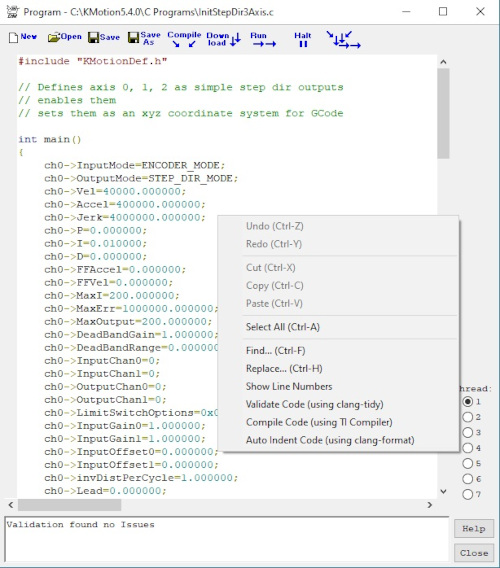
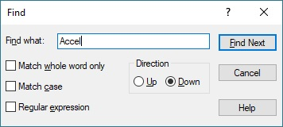
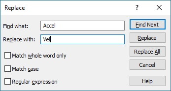
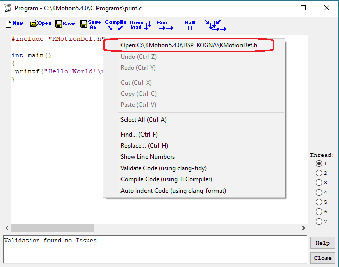

Show Context Menu

Undo/Redo
Right-clicking within the edit window brings up a context menu that allows:
- unlimited Undo/Redo
- Cut, Copy, Paste
- and Find/Replace Dialogs (CTRL-F also brings up the Find Dialog, CTRL-H the Replace Dialog)
Find/Replace
Find and Replace allow Unix style Regular Expressions for complex matching and substitution.


Code Validator
To use code Validator right-click and select: Validate Code (using clang-tidy). Which is based on open source code validator clang-tidy.exe. Validation can report possible Code issues or bugs. As well as unused or un-initialized variables. See our Validate C Programs video (note: video demonstrates an earlier but similar code Validator).
A customization file can be modified for controlling which type of checks are performed. The file is \DSP_KFLOP\clang\.clang-tidy. The configuration file format is described here: https://clang.llvm.org/extra/clang-tidy
Any detected Errors and Warnings will appear in the lower panel of the C Programs Screen. Double clicking on an error should take you directly to the line in the code where the error was detected. Note if the code is detected in an #included file, that file will be opened in a subsequent Thread (or if already open in any Thread that Thread will be selected). When correcting any error or warning in an #included file, remember to go back to file that includes it before re-Validating the program.
TI Compiler
To Compile Code using Texas instrument's Optimizing C Compiler. See here for information about the TI Compiler.
Auto-Indent/Code Beautifier
To use code formatter right-click and select: Auto Indent Code (using clang-format). See our C Code Indent and Code Beautifier video.
This code formatter is based on the open-source code formatter clang-format.exe. Documentation and description of options can be found here:
https://clang.llvm.org/docs/ClangFormat.html.
An options profile file can be modified to change the style. Dynomotion includes the recommended style as: \DSP_KFLOP\clang\clangformat.txt.
Opening included files
If the code is detected in an #included file, that file will be opened in a subsequent Thread (or if already open in any Thread that Thread will be selected). When correcting any error or warning in an #included file, remember to go back to file that includes it before re-Compiling the program.
When right-clicking on an #include line, the drop down list will offer the option to open the included file. If that file is already open in one of the Threads it will automatically switch to that Thread. If not, it will open the file in the next Thread (Thread #7 wraps back to Thread #1).
